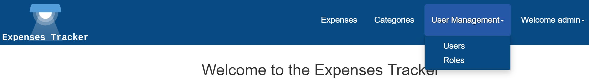
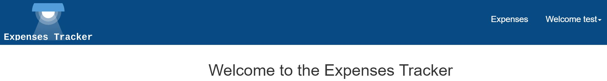

This application can be used to track your daily expenses. It was created for the FHNW module webec
The expense tracker is used to track expenses and to categorise them. The web-application also has role based security which allows different things for the admins and normal users
I seeded some default data to make it easier to test after a start in the file Bootstrap.groovy.
I have never worked with Grails before and I am not very experienced in web development. I struggled at first, but after a while I started to like it
I could not finish everything the way I wanted, because I struggled with the time. In the beginning I wanted to export the monthly statement to pdf, but I just couldn't make it work, so I reverted it completely. But overall I am happy that I have a functioning solution.
This is how a navigation bar of an admin looks like
Users with the role admin can create new users and categories additionally to all the functions that a normal user has. They can also see the expenses of all users in a parent-child view when they click on the user to show them.
This is how a navigation bar of a user looks like
Normal users can create expenses for all the categories that the admins define
The user can also see a monthly statement of all the expenses that they had
the user can see the expenses for all the categories that the admin created
The CRUD functionalities are accessible in the index page, but there are also 2 new functionalities there
The basic CRUD functionalities are accessible only for the users with the admin role
The user and role management is only accessible for admins. The pages are used for basic CRUD functions
The admin can also see all expenses of a user in a parent child view when they show a user